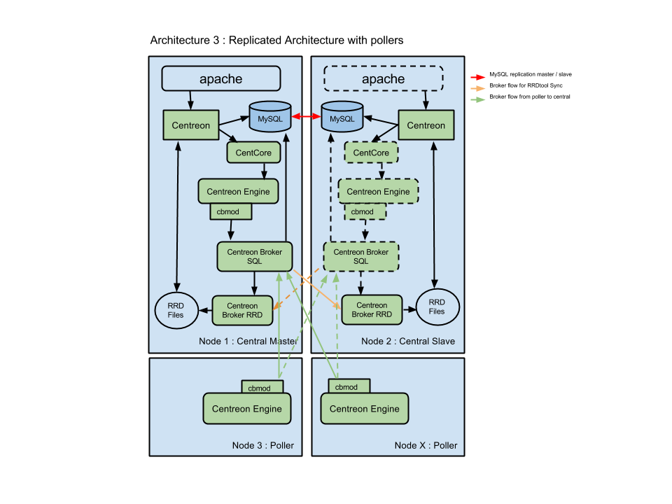

Distributed architecture with failover¶
Description¶
The distributed architecture with remote DBMS is to have three types of entities:
- A central Centreon server to display information
- One or more remote servers to collect data
In order to have a failover the centreon central server is duplicated.
The central Centreon server includes the following items:
- Centreon web interface
- Monitoring Engine
- Broker
- Databases (MySQL + RRD)
The remote servers include the following items:
- Monitoring Engine
- Broker module to forward collected data to a central broker
This architecture is used for:
- Enable load balancing across multiple remote monitoring servers
- Network streams isolation: if your monitoring architecture has to monitor a DMZ area, it is easier (and safe) to place a remote server in the DMZ network
- Have a failover system: if the master centreon server is DOWN the other one allows to continue to display data.
Components¶
Central Centreon server¶
There is two types of Centreon central server:
- A master server
- A slave server which is configured as the master one but with only MySQL and Centreon Broker RRD monitoring processes started.
Many components are used to build a master Centreon server:
- Apache web server for Centreon web interface
- The central Centreon server get configuration and collected data from DBMS server
- The Centcore process is used to send monitoring configuration to the remote server and to manage it
- A monitoring engine to collect data
- Collected data are sent to Centreon Broker SQL using cbmod by monitoring engine
- Centreon Broker SQL allows to store information into MariaDB databases and forward them to the two Centreon Broker RRD (master and slave)
- Centreon Broker RRD generates and updates RRD files with data in order to display performance graphs
A bidirectional MySQL replication allows to store in both databases Centreon configuration and collected data.
The slave server is used in regular mode to generate and to update RRD files with data in order to display performance graphs.
In case of failure, the operator has to start the following process on slave server: Apache, CentCore, Centreon Engine and Centreon Broker SQL. The slave server becomes master.
The failover and the management of components are made by Corosync / Pacemaker system.
Remote monitoring server¶
Many components are used to build a remote server:
- A monitoring engine to collect data
- Collected data are sent to Centreon Broker SQL using cbmod by monitoring engine
- Centreon Broker SQL allows to store information into MariaDB databases and forward them to Centreon Broker RRD
- Centreon Broker RRD generates and updates RRD files with data in order to display performance graphs
Architecture¶
The diagram below summarizes the architecture:
